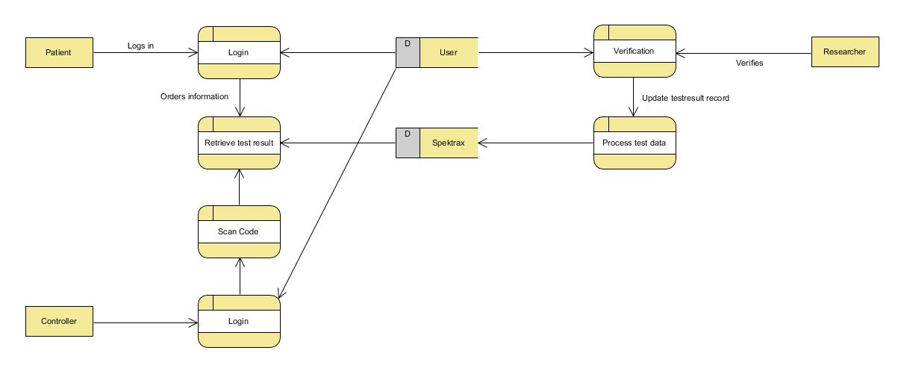
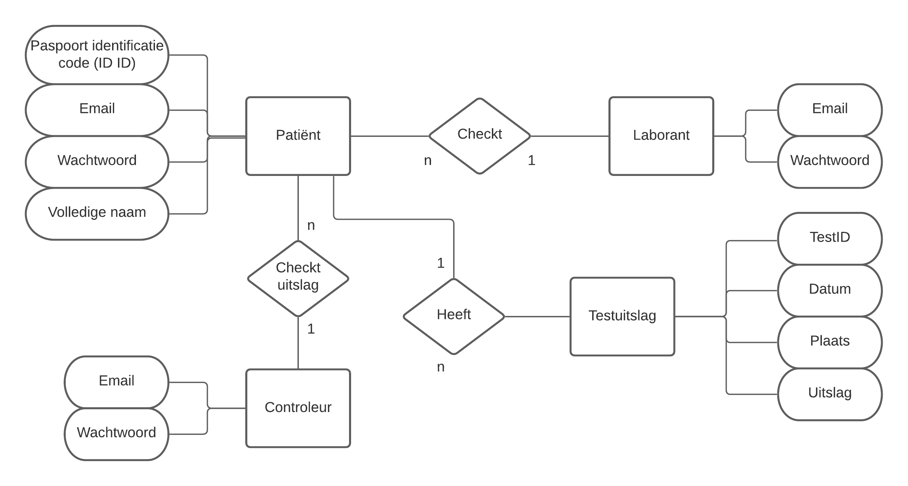
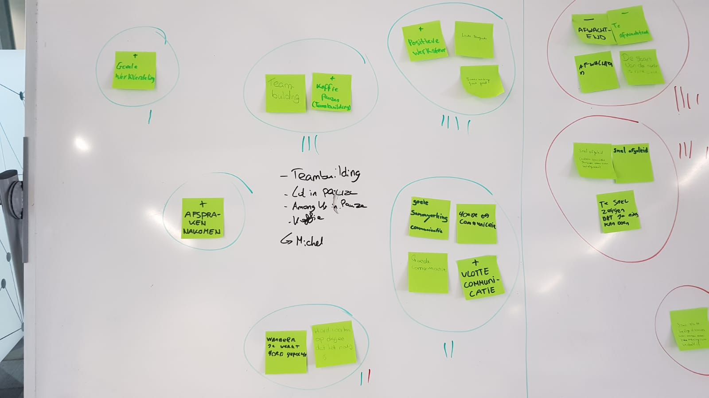
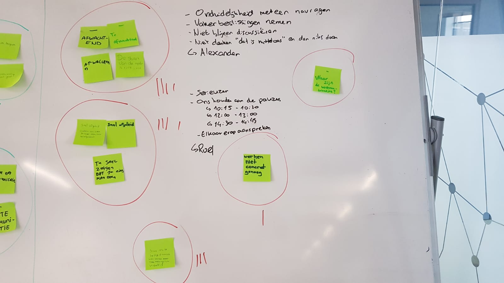
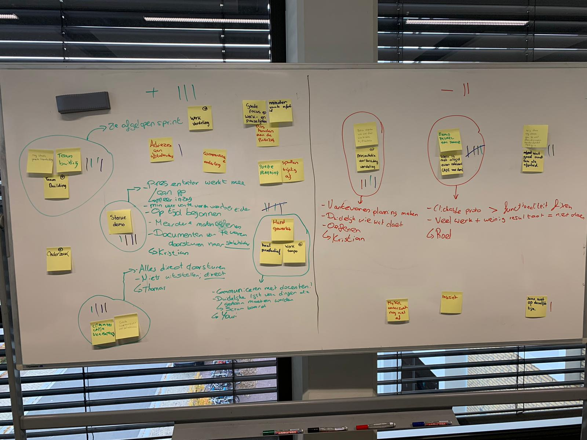
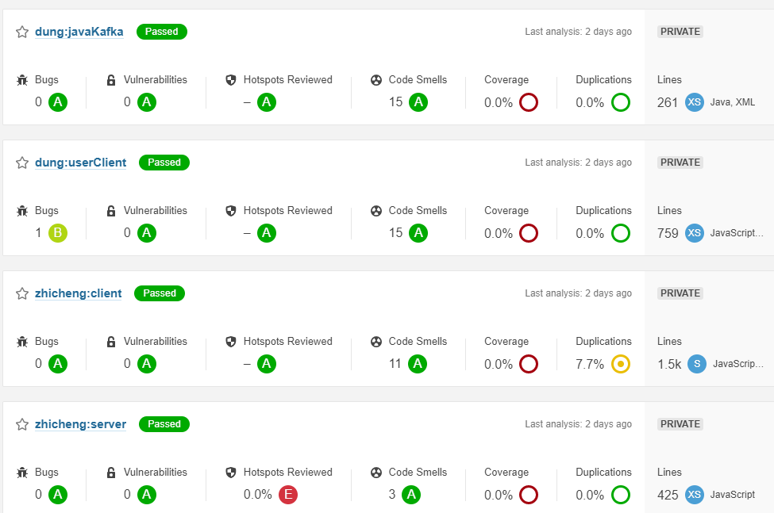

Voor ons project moesten we een corona teststraat maken. Hiernaast zouden we twee afstudeerders helpen als beveiligingsadviseurs. In onze corona teststraat zouden we de applicaties van afstudeerders verwerken. Dit zouden we dan laten zien als een demo. In het begin hadden we wat communicatie problemen tussen ons en de stakeholders waardoor we het verkeerde idee hadden gekregen. Hierdoor hebben we meerdere keren onze documentatie moeten aanpassen waaronder het projectplan , de threat analyse , Ethische analyse en designs.
Ik heb dit project ,ondanks de tegenslagen die we in het begin hadden, erg informatief gevonden. Ik ben daarna ook erg tevreden geweest met de groep waar ik mee werkte. Deze groep vond het leuk om dingen op te zoeken waardoor ik veel heb kunnen leren over security. Ook al is het eindresultaat dat we leveren niet was zoals we hadden gehoopt heb ik toch veel geleerd en kijk ik op een security manier naar applicaties.
Tijdens het project hebben we peerreviews over elkaar geschreven. deze kan je hier vinden. De peerreviews beschrijven wat mijn teamgenoten van mij vonden.
We hebben gebruik gemaakt van korte sprints waar we aan het eind van de sprint een nieuw product geven aan de stakeholders om erover te discussieren. Hiernaast maakte we gebruik van retroperspectief en scrumboards.
We zijn in sprint 1 begonnen met het helpen van de afgestudeerden. De manier hoe we hun hielpen was door hun documentatie te bekijken. Nadat we hun documentatie hadden bekeken hadden we een document voor elke afstudeerder gemaakt en hierin geschreven wat we dachten dat verbeterd kon worden. Dit hebben we later in sprint 3 in nette adviesrapporten gezet. Zie Dungs adviesrapport of Zhichengs adviesrapport
Tijdens sprint 1 hebben we ook gewerkt aan het maken van ontwerpen/ security designs. Deze designs waren gemaakt op verzoek van Stephan en Casper. Wij hebben op deze tekeningen feedback gevraagd en hier zijn de eindresultaten
Ict infrastructuur gemaakt door Kristian en Youri

Dataflow gemaakt door Roel en Alexander
EntityRelationDiagram gemaakt door michel en thomas
Aan het eind van de sprint hadden we een retroperspectief. Hieruit bleek dat we goed met elkaar konden communiceren maar wel snel afgeleid raakten. Verder bleek t ook dat we soms te lang over een onderwerp discussieerde. We zijn toen weze brainstormen en hebben elkaar toen rollen gegeven. We hoopten dat we met deze rollen de negatieve punten van het retroperspectief konden verbeteren. Het maken van de rollen heeft er zeker voor gezorgd dat we beter hebben kunnen werken.
 In de tweede sprint hebben we gefocust op 3 dingen: Het maken van een demo met de applicaties van de afgestudeerde, het maken van een research document over het BSN en het maken van een document met als doel hoe je het best een mysql database kan beveiligin.
Ons idee van een demo ging was om een controle bij een evenement te zetten waar mensen worden gecheckt op hun kaart en hun resultaat van een covidtest.
1. Als een persoon negatief was getest en een geldig kaartje had was het toegestaan om naar binnen te gaan.
2. Als een persoon negatief was getest maar geen geldige kaartje had mocht de persoon niet naar binnen.
3. Als een persoon positief was getest maar wel een kaartje had moet de persoon de het pand verlaten.
4. Als een persoon geen test had maar wel een geldig kaartje had werd de persoon naar een sneltest gebracht en als hij dan een negatief resultaat heeft mag de persoon naar binnen.
De reden voor het maken van een demo was om ervoor te zorgen dat de stakeholders en wij op een rechte lijn zaten en dat we hetzelfde beeld zouden hebben. Hierdoor zou het makkelijker zijn om ideëen uit te wisselen en kritiek te leveren.
Al in al waren de stakeholders blij met ons idee maar ze hadden wel wat kritiek. Ze vonden bijvoorbeeld dat de teststraat beter ergens anders dan bij het evenement kon zitten. Dan zouden de personen 1 a 2 dagen van te voren naar de teststraat komen om hun test uit te voeren. Hierdoor zouden er minder besmette mensen bij het evenement kunnen komen.
Er was daarnaast nog een vraag of het mogelijk was om het BSN nummer te koppeken aan de testresultaten van een persoon. Hiervoor moesten we een geldige reden hebben en moest er dus wat extra onderzoek worden gedaan.
Het plan werd om voor sprint 3 alle misuse scenarios op te schrijven, onderzoek naar het bsn nummer hebben gedaan en onderzoek naar een MySQL database te doen. Ook werd er van ons nog steeds verwacht om de afstudeerders te helpen met security advies. Persoonlijk was ik veel bezig samen met Kristian aan het BSN onderzoek.
Tijdens het retroperspectief van sprint twee hadden we een paar dingen op aan te merken. De demo hadden we veel te veel moeite in gestopt vooral op het software gedeelte. Dit was onnodig en gaf ook onnodig stress. Dit zouden we voortaan niet meer doen. Het tweede gedeelte was dat mensen steeds vaker afgeleid raakten. Ik moest hier wat strenger in worden en iedereen was het daarmee eens. Het laatste puntje was dat het handig was geweest als we van te voren naar de stakeholders zouden hebben gestuurd wat we zouden bespreken met onze documenten. Hierdoor hadden we een wat efficientere manier alles kunnen bespreken. Afgezien van deze drie punten was de rest goed verlopen en was iedereen tevreden.
De grootste tijd van sprint 3 hebben wij gewerkt aan de misuse scenarios, het bsn en mysql onderzoek. Het bsn research hebben we besproken met Stephan en daarna doorgestuurd naar de Juridische hoge school. De feedback die wij ervan terug kregen hadden we geimplementeerd.De mysql research is gemaakt door Michel, Thomas, Youri en Alexander. Ik en Kristian hebben dat samen met de rest nagecheckt. Daarna zijn we met zijn alle aan de misuse scenarios begonnen. Dit hebben we meerdere dagen over gedaan voordat we ermee klaar waren.
Na jet afmaken van de belangrijkste taken zijn we begonnen met code analyse . We hebben zowel handmatige code analyse gedaan als gebruik gemaakt van sonarqube. Hiervan hebben we documenten gemaakt en deze doorgestuurd naar de afstudeerders.
Als laatste hebben we alle adviezen dat we aan de afstudeerders hebben gegeven in een nieuwe document gezet en deze professioneel opgesteld. Dit hadden we toen naar hun toegestuurd en we kregen haast meteen een antwoord terug dat ze ernaar gingen kijken wat heel handig was.